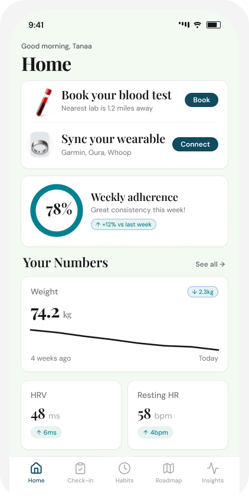
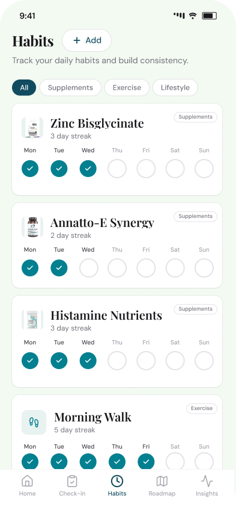

I'm deep into health and wellbeing. Over the last few years I've worked closely with health coaches and functional medicine practitioners, and I noticed a pattern in the health industry: someone gets blood work done, receives a PDF of biomarkers, and has no idea what to do with any of it.
One day I had a Eureka moment for an app that would bring this all together. I've been deep-diving into Claude and it's been an absolute gem bringing my ideas to life - while 3-5xing the process. An absolute joy to work with!
The objective was to design an app that I would use - something that would keep me on track 24/7 - so that I'm always moving the needle health-wise and underpinned by data.


It's well documented that since the pandemic there's been a rebellious counterculture for wellbeing. I noticed old school and uni mates who were practising physicians started to specialise in preventative, root-cause approaches. I discovered Dr Mark Hyman, one of the founders of Function Health, and went deep on his podcasts, books, and audiobooks. It became a North Star for how I thought about health from that point onwards.
I spent time in Bali with some of the leading holistic health practitioners and realised that naturopathy and stuff like TCM can feel a bit fluffy. Conventional medicine has the rigour but is often reactive.
Any time I've seen someone genuinely heal from a chronic condition or send their condition into remission, it's been through merging both worlds: evidence-based interventions with a holistic, root-cause angle.
How do we ensure data-driven precision in health without losing the nuance?
Claude helped with everything from ideation to wireframes, but it took a lot of customisation and back-and-forth to get things right. This was pre-Figma MCP, so I exported from Claude as HTML, used a Figma-to-HTML plugin to bring it in, refined the UI, then brought it back into Claude to keep iterating. I didn't want it to look like something Lovable spat out in five seconds.
For the UI, I used Tailwind UI as a base with calm colours and a serif/sans-serif pairing for a clean, clinical feel. This was really just about doing something for fun and seeing how far I could push the concept.
After this ideation, I added UX Design and UX Copywriting skills to Claude that would have accelerated the process and cut the initial back and forth. But we live and we learn.
Post-blood test, some labs dump you into a wall of data. I wanted the home screen to feel like a coach checking in, simplified and removing the overwhelm: such as your adherence this week, what your body's been doing, the one thing to focus on next.
Cronometer was a huge inspiration in this process. I use it daily for macros and love the micronutrient features. But it becomes really powerful when you combine nutrition data with your biochemistry, plus habit/supplement tracking. Your nutrition, supplements, and blood work - all correlated, feeding into a phased roadmap, the ability to monitor biofeedback and book sessions with your coach would be the one stop shop for optimising health.
Having worked alongside coaches and practitioners, I've seen how check-ins happen in real time. These are core components of an individual's health journey and it's what helps keep them on track week in week out. I also saw an opportunity to streamline the process even further and reduce the repetition that can occur after regular sessions and the ability for data to be centralised.
I designed structured weekly check-ins - one question per screen, dial ratings, multi-select for symptoms. Finished in minutes. The coach/practitioner gets clean data they can review before a call instead of scrolling a chat thread. Technology enhancing the relationship, rather than replacing it.
The supplement stack alone can be overwhelming - zinc bisglycinate before bed, raw ginger before meals, specific proteins at specific times. Most people fall off within a fortnight without the right accountability and system.
I kept the habit tracker simple. Weekly grid, streak count, category filters. It's something that could be expanded on, but a great v1.
A lot of health protocols give you everything at once and expect you to figure out the correct order to do everything (or might not even be aware that that matters!).
The order 100% matters. For example, if someone has leaky gut and you throw an aggressive cleanse at them, you can trigger endotoxemia (circulates more toxins throughout the body) at a time when the body is already vulnerable. The right intervention at the wrong time does more harm than good.
That's why I designed a phasic roadmap. One phase at a time, in the right order. Rebuild foundations first - digestion, nutrient absorption, daily rhythm - before optimisation. The '20% that gets 80% of results' card helps simplify for our busy modern lifestyle and designed to prevent overwhelm.
What works is looking at biomarkers through the lens of patterns and correlations. The real value is in the connections. For example, elevated fasting glucose alongside raised HbA1c, AST and ALT tells a different story than any one of these markers alone. Similarly, low serum magnesium needs to be interpreted alongside other markers, since serum levels represent only approximately 0.1% of the body's total magnesium.
I grouped everything into body systems: heart, metabolic, hormonal, liver, immune, with a traffic light status on each. Balancing the clinical side with what's readable and digestible for the audience (a layman).
The process here was just to ideate quickly and bring a concept into something tangible. I believe the best way to get good at AI is to do - not consume course after course. I enjoy bringing concepts to life, and with this tech it's also the perfect way to sharpen your systems-based and critical thinking - both invaluable skills for the future.
Click through the interactive prototype to see the full UI in action - another thing that's so much faster in Claude.